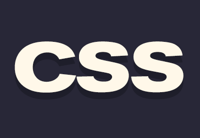

Ce este CSS?
CSS este o metoda prin care putem adăuga diferite stiluri paginii web.
Stilurile pot fi adăugate:
- În linie
- În interiorul paginii intre etichetele <style> si </style>
- Într-un fisier extern cu extensia .css ;în acest caz trebuie să folosim eticheta <link>
Pentru a lega fișiere externe paginii folosim sintaxa:
<link href="numefisier.css"type="text/css"rel="stylesheet">
Pentru a adauga stiluri in linie,să zicem într-un paragraf vom folosi:
<p style="color:red">Acest paragraf va fi de culoare roșie.</p> Se va afișa:
Acest paragraf va fi de culoare roșie.
Pentru a adauga stiluri in interiorul paginii,vom definii o clasă sau un id unui element de pe pagina, apoi mergem la head-ul paginii,unde vom descrie stilurile elementelor.
In head:
<style>
.clasa{color:green}
#id{color:powderblue}
</style>
In body:
<p class="clasa">Paragraf verde</p>
Paragraf verde
<p id="id">Paragraf albastru deschis </p>
Paragraf albastru deschis
Pentru fișiere css externe va fi aceeași sintaxa.
Culoarea
Cu ajutorul CSS puteți adăuga culoare elementelor HTML.
Se pot definii:
- cu funcția rgb(red,green,blue),ce conține numere de la 0 la 255;
- cu funcția rgba(red,green,blue,alpha);
- cu valori hexazecimale de forma #rrggbb,si conțin valori de la 00 la ff;Afla mai multe despre numerele hexazecimale aici!
- sau pur și simplu punand numele culorii in engleză.
Aici avem niște exemple:
Culori definite cu denumirea in engleză
Tomato
Orange
DodgerBlue
MediumSeaGreen
Gray
SlateBlue
Violet
LightGray
Culori definite cu funcția rgb()
rgb(255, 0, 0)
rgb(0, 0, 255)
rgb(60, 179, 113)
rgb(238, 130, 238)
rgb(255, 165, 0)
rgb(106, 90, 205)
rgb(0, 0, 0)
rgb(60, 60, 60)
rgb(120, 120, 120)
rgb(180, 180, 180)
rgb(240, 240, 240)
rgb(255, 255, 255)
Culori definite cu funcția rgba()
Functia rgba(red,green,blue,alpha)
Alpha reprezinta gradul de transparenta a culorii
Are valori de la 0.0 (si este invizibila)-1.0(si este 100% solida)
rgba(0, 0, 255,0.0)
rgba(0, 0, 255,0.1)
rgba(0, 0, 255,0.2)
rgba(0, 0, 255,0.3)
rgba(0, 0, 255,0.4)
rgba(0, 0, 255,0.5)
rgba(0, 0, 255,0.6)
rgba(0, 0, 255,0.7)
rgba(0, 0, 255,0.8)
rgba(0, 0, 255,0.9)
rgba(0, 0, 255,1.0)
Culori definite cu valori hexazecimale
#ff0000
#0000ff
#3cb371
#ee82ee
#ffa500
#6a5acd
#000000
#3c3c3c
#787878
#b4b4b4
#f0f0f0
#ffffff
Notă:Puteți alege mai ușor culorile cu ajutorul acestui site!